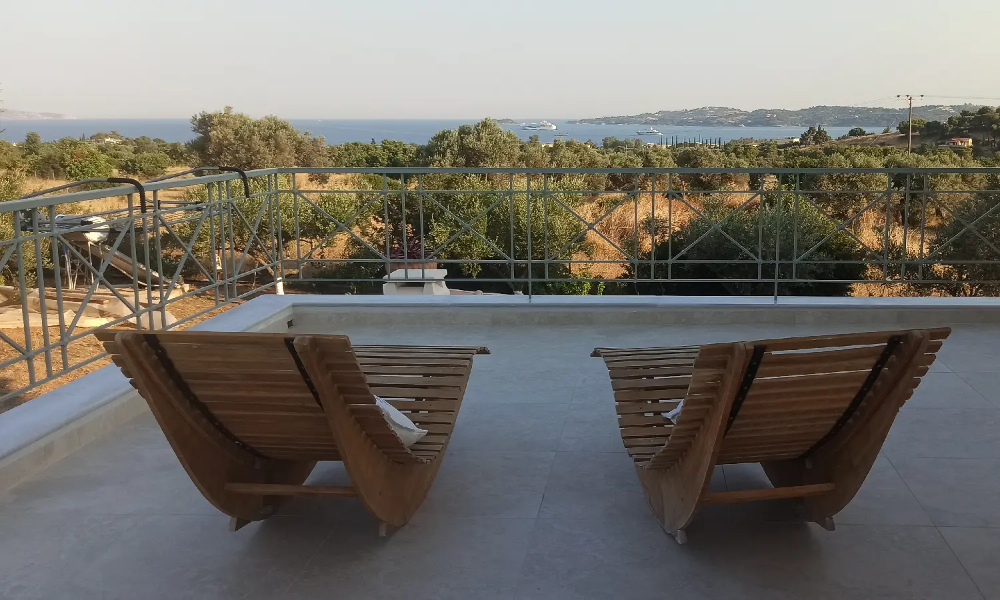

The house
Surrounded by greenery and olive groves
A privileged, peaceful setting where time passes in complete serenity.
The house
Welcoming, warm, refined, authentic
La Maison Vert Amande is a place that reflects its owners: welcoming, warm, refined and authentic. Nothing flashy. A peaceful retreat, far from the legendary hustle and bustle of the islands — which are often crowded, noisy and lively.
Surrounded by greenery and olive groves, you'll be captivated by the tranquillity and untamed beauty of the surroundings. The cosy atmosphere of the guest room, its own private entrance and two very large verandas offering breathtaking sea views allow you to retreat and admire the sunsets and sunrises.
We hope our guests will enjoy a “simple island life” at an establishment that cares for the environment and is a truly family-run guesthouse. Our daily focus is on ensuring guests enjoy a wonderful stay in a comfortable and spacious room, and we are entirely at their disposal to make this happen.
Our establishment is also well known thanks to word of mouth from our consistently satisfied guests.

The room
20 m², bright, and yours alone
- 20 m² and very bright, with direct access to two very large verandas
- Separate private entrance via an external staircase
- Genuine king-size double bed, large wardrobe and fridge
- Private bathroom with shower, WC and heated towel rail
- Hairdryer provided · free Wi-Fi · standard electrical sockets
- Tea and coffee provided (no cooking facilities)
- Heating in winter · large ceiling fan · mosquito nets (no air conditioning)
- Private parking · non-smoking · pets not permitted
Testimonials
Words left behind